Last updated: 2026-07-27
Checks: 5 2
Knit directory: mos-nmf-experiments/
This reproducible R Markdown analysis was created with workflowr (version 1.7.1). The Checks tab describes the reproducibility checks that were applied when the results were created. The Past versions tab lists the development history.
The R Markdown is untracked by Git. To know which version of the R Markdown file created these results, you’ll want to first commit it to the Git repo. If you’re still working on the analysis, you can ignore this warning. When you’re finished, you can run wflow_publish to commit the R Markdown file and build the HTML.
The global environment had objects present when the code in the R Markdown file was run. These objects can affect the analysis in your R Markdown file in unknown ways. For reproduciblity it’s best to always run the code in an empty environment. Use wflow_publish or wflow_build to ensure that the code is always run in an empty environment.
The following objects were defined in the global environment when these results were created:
| Name | Class | Size |
|---|---|---|
| rstudio_pandoc | character | 232 bytes |
The command set.seed(20260624) was run prior to running the code in the R Markdown file. Setting a seed ensures that any results that rely on randomness, e.g. subsampling or permutations, are reproducible.
Great job! Recording the operating system, R version, and package versions is critical for reproducibility.
Nice! There were no cached chunks for this analysis, so you can be confident that you successfully produced the results during this run.
Great job! Using relative paths to the files within your workflowr project makes it easier to run your code on other machines.
Great! You are using Git for version control. Tracking code development and connecting the code version to the results is critical for reproducibility.
The results in this page were generated with repository version 5b76597. See the Past versions tab to see a history of the changes made to the R Markdown and HTML files.
Note that you need to be careful to ensure that all relevant files for the analysis have been committed to Git prior to generating the results (you can use wflow_publish or wflow_git_commit). workflowr only checks the R Markdown file, but you know if there are other scripts or data files that it depends on. Below is the status of the Git repository when the results were generated:
Ignored files:
Ignored: .DS_Store
Ignored: .Rhistory
Ignored: .Rproj.user/
Ignored: analysis/.DS_Store
Untracked files:
Untracked: analysis/1.poisson-susie.Rmd
Untracked: analysis/2.joint-learn-susie-poi-F.Rmd
Untracked: analysis/3.overspecify-D-mf-poi-susie.Rmd
Untracked: analysis/4.overspecify-K-mf-poi-susie.Rmd
Untracked: analysis/5.tree-scenario.Rmd
Untracked: tex/main.pdf
Untracked: tex/main.tex
Unstaged changes:
Modified: .codex/project-memory.md
Modified: analysis/_site.yml
Modified: analysis/index.Rmd
Deleted: analysis/joint-learn-susie-poi-F.Rmd
Modified: analysis/mos-nmf-overspecify-D.Rmd
Deleted: analysis/overspecify-D-mf-poi-susie.Rmd
Deleted: analysis/overspecify-K-mf-poi-susie.Rmd
Deleted: analysis/poisson-susie.Rmd
Deleted: analysis/tree-scenario.Rmd
Modified: code/mos-nmf-benchmark-utils.R
Modified: code/mos-nmf.R
Modified: paper-roadmap.md
Deleted: tex/model-ideas.tex
Note that any generated files, e.g. HTML, png, CSS, etc., are not included in this status report because it is ok for generated content to have uncommitted changes.
There are no past versions. Publish this analysis with wflow_publish() to start tracking its development.
This page stress-tests the MF-Poisson-SuSiE fit when the number of fitted factors is larger than the true number of factors. The main question is whether the fitted model still recovers the true factor rows and sparse supports, and whether the extra factor rows remain weakly used or become duplicates.
This is the \(K\)-side analogue of the previous page. Overfitted \(D\) creates extra effect dimensions within an observation. Overfitted \(K\) creates extra candidate rows in the dictionary. If those rows duplicate a true factor, posterior uncertainty should appear as competition among fitted factor labels.
source("code/joint-learn-susie-poi-F.R")The data-generating mechanism matches the current joint-learning experiment: five true factor rows, three possible effects per observation, five one-factor groups, and three three-factor groups.
set.seed(42)
N = 1600
M = 2000
K_true = 5
D = 3
K_fit = 7
F0 = matrix(rgamma(M * K_true, shape = 0.1, rate = 0.01),
nrow = K_true, ncol = M)
F0 = F0 / rowSums(F0)
n_per_group = N / 8
L = matrix(0, nrow = N, ncol = K_true)
grp = rep(1:8, each = n_per_group)
for (g in 1:5) {
L[grp == g, g] = matrix(rgamma(n_per_group, 10, 1), n_per_group, 1)
}
L[grp == 6, c(1, 2, 3)] = matrix(rgamma(n_per_group * 3, 20, 1),
n_per_group, 3)
L[grp == 7, c(1, 2, 4)] = matrix(rgamma(n_per_group * 3, 20, 1),
n_per_group, 3)
L[grp == 8, c(2, 3, 5)] = matrix(rgamma(n_per_group * 3, 20, 1),
n_per_group, 3)
rate = L %*% F0
Y = matrix(rpois(N * M, rate), nrow = N, ncol = M)
data.frame(
N = N,
M = M,
K_true = K_true,
K_fit = K_fit,
D = D,
total_count = sum(Y),
nonzero_entries = sum(Y > 0)
) N M K_true K_fit D total_count nonzero_entries
1 1600 2000 5 7 3 45971 43361true_patterns = vapply(1:8, function(g) {
paste(which(colSums(L[grp == g, , drop = FALSE]) > 0), collapse = ",")
}, character(1))
data.frame(group = 1:8, true_active_factors = true_patterns) group true_active_factors
1 1 1
2 2 2
3 3 3
4 4 4
5 5 5
6 6 1,2,3
7 7 1,2,4
8 8 2,3,5With K_fit > K_true, factor recovery is rectangular. We match each true factor to one learned factor row, then separately inspect the usage and nearest true factor for every learned row.
row_cosine = function(A, B) {
A_norm = sqrt(rowSums(A^2))
B_norm = sqrt(rowSums(B^2))
(A %*% t(B)) / (A_norm %o% B_norm)
}
all_permutations = function(x) {
if (length(x) == 1) return(matrix(x, nrow = 1))
do.call(rbind, lapply(seq_along(x), function(i) {
cbind(x[i], all_permutations(x[-i]))
}))
}
match_true_to_learned = function(F_hat, F_true) {
K_fit = nrow(F_hat)
K_true = nrow(F_true)
similarity = row_cosine(F_hat, F_true)
best_score = -Inf
best_learned_for_true = rep(NA_integer_, K_true)
learned_sets = combn(seq_len(K_fit), K_true, simplify = FALSE)
for (learned_set in learned_sets) {
perms = all_permutations(learned_set)
scores = apply(perms, 1, function(p) {
sum(similarity[cbind(p, seq_len(K_true))])
})
idx = which.max(scores)
if (scores[idx] > best_score) {
best_score = scores[idx]
best_learned_for_true = perms[idx, ]
}
}
learned_to_true = rep(NA_integer_, K_fit)
learned_to_true[best_learned_for_true] = seq_len(K_true)
nearest_true = apply(similarity, 1, which.max)
nearest_cosine = similarity[cbind(seq_len(K_fit), nearest_true)]
list(
match = data.frame(
true_factor = seq_len(K_true),
learned_factor = best_learned_for_true,
cosine = similarity[cbind(best_learned_for_true, seq_len(K_true))]
),
learned_rows = data.frame(
learned_factor = seq_len(K_fit),
matched_true_factor = learned_to_true,
nearest_true_factor = nearest_true,
nearest_true_cosine = nearest_cosine
),
learned_to_true = learned_to_true,
nearest_true = nearest_true
)
}
loading_scores = function(fit) {
E_beta = fit$alpha / fit$lambda
apply(fit$gamma_bar * E_beta, c(1, 3), sum)
}
assignment_scores = function(fit) {
apply(fit$gamma_bar, c(1, 3), sum)
}
posterior_inclusion_scores = function(fit) {
1 - apply(1 - fit$gamma_bar, c(1, 3), prod)
}
map_scores_to_true = function(scores, learned_to_true, K_true) {
out = matrix(0, nrow = nrow(scores), ncol = K_true)
for (k in seq_along(learned_to_true)) {
if (!is.na(learned_to_true[k])) {
out[, learned_to_true[k]] = out[, learned_to_true[k]] + scores[, k]
}
}
out
}
support_labels_from_scores = function(scores, support_sizes) {
vapply(seq_len(nrow(scores)), function(i) {
active = order(scores[i, ], decreasing = TRUE)[seq_len(support_sizes[i])]
paste(sort(active), collapse = ",")
}, character(1))
}
normalized_entropy = function(scores) {
prob = scores / rowSums(scores)
entropy = -prob * log(prob)
entropy[is.nan(entropy)] = 0
mean(rowSums(entropy)) / log(ncol(scores))
}
plot_cosine_heatmap = function(cosine_mat, main) {
image(x = seq_len(ncol(cosine_mat)), y = seq_len(nrow(cosine_mat)),
z = t(cosine_mat), axes = FALSE, xlab = "True factor",
ylab = "Fitted factor", main = main, col = hcl.colors(100, "YlOrRd"))
axis(1, at = seq_len(ncol(cosine_mat)),
labels = paste0("true ", seq_len(ncol(cosine_mat))))
axis(2, at = seq_len(nrow(cosine_mat)),
labels = paste0("fit ", seq_len(nrow(cosine_mat))), las = 1)
for (k_fit in seq_len(nrow(cosine_mat))) {
for (k_true in seq_len(ncol(cosine_mat))) {
text(k_true, k_fit, sprintf("%.2f", cosine_mat[k_fit, k_true]),
cex = 0.75)
}
}
box()
}
plot_usage = function(loading_usage, assignment_usage, nearest_true) {
usage_mat = rbind(loading = loading_usage, assignment = assignment_usage)
barplot(usage_mat, beside = TRUE, names.arg = paste0("fit ", seq_along(loading_usage)),
xlab = "Fitted factor", ylab = "Usage fraction",
main = "Fitted factor usage", col = c("firebrick", "gray50"),
ylim = c(0, max(usage_mat) * 1.2))
legend("topright", legend = rownames(usage_mat),
fill = c("firebrick", "gray50"), bty = "n")
mtext(paste("nearest true:", paste(nearest_true, collapse = " ")),
side = 1, line = 4, cex = 0.8)
}
plot_recovered_support = function(scores_true_space, main) {
support_size = true_support_size
recovered = matrix(0, nrow = K_true, ncol = N)
for (i in seq_len(N)) {
active = order(scores_true_space[i, ], decreasing = TRUE)[seq_len(support_size[i])]
recovered[active, i] = 1
}
image(x = seq_len(N), y = seq_len(K_true), z = t(recovered),
axes = FALSE, xlab = "Sample", ylab = "Recovered true factor",
main = main, col = c("white", "firebrick"))
axis(1, at = seq(n_per_group / 2, N, by = n_per_group),
labels = paste("G", 1:8))
axis(2, at = seq_len(K_true), labels = seq_len(K_true), las = 1)
abline(v = seq(n_per_group, N - n_per_group, by = n_per_group),
col = "gray80", lty = 3)
box()
}
plot_recovered_support_fit = function(scores_fit_space, main) {
recovered = matrix(0, nrow = ncol(scores_fit_space), ncol = N)
for (i in seq_len(N)) {
active = order(scores_fit_space[i, ], decreasing = TRUE)[
seq_len(true_support_size[i])
]
recovered[active, i] = 1
}
image(x = seq_len(N), y = seq_len(ncol(scores_fit_space)), z = t(recovered),
axes = FALSE, xlab = "Sample", ylab = "Recovered fitted factor",
main = main, col = c("white", "firebrick"))
axis(1, at = seq(n_per_group / 2, N, by = n_per_group),
labels = paste("G", 1:8))
axis(2, at = seq_len(ncol(scores_fit_space)),
labels = seq_len(ncol(scores_fit_space)), las = 1)
abline(v = seq(n_per_group, N - n_per_group, by = n_per_group),
col = "gray80", lty = 3)
box()
}
conditional_scores = function(scores, factor_set, sample_idx) {
out = scores[sample_idx, factor_set, drop = FALSE]
out = out / rowSums(out)
out[is.nan(out)] = 0
out
}
row_normalized_entropy = function(prob) {
entropy = -prob * log(prob)
entropy[is.nan(entropy)] = 0
rowSums(entropy) / log(ncol(prob))
}
plot_competing_factor_shares = function(prob, sample_idx, factor_set, main) {
sample_group = grp[sample_idx]
group_run = rle(sample_group)
group_end = cumsum(group_run$lengths)
group_mid = group_end - group_run$lengths / 2
image(x = seq_along(sample_idx), y = seq_along(factor_set), z = prob,
axes = FALSE, xlab = "Sample with target true factor active",
ylab = "Competing fitted factor", main = main,
col = hcl.colors(100, "YlOrRd"))
axis(1, at = group_mid, labels = paste("G", group_run$values))
axis(2, at = seq_along(factor_set),
labels = paste0("fit ", factor_set), las = 1)
if (length(group_end) > 1) {
abline(v = group_end[-length(group_end)] + 0.5, col = "gray80", lty = 3)
}
box()
}
plot_competing_entropy = function(entropy, sample_idx, main) {
boxplot(entropy ~ factor(grp[sample_idx]), xlab = "Group",
ylab = "Normalized entropy", main = main)
}
candidate_competing_factors = function(true_factor, top_n = 3) {
nearest_set = which(factor_match$nearest_true == true_factor)
top_set = order(cosine_fit_true[, true_factor], decreasing = TRUE)[
seq_len(min(top_n, nrow(cosine_fit_true)))
]
sort(unique(c(nearest_set, top_set)))
}
competing_factor_diagnostics = function(true_factor, factor_set = NULL,
top_n = 3) {
if (is.null(factor_set)) {
factor_set = candidate_competing_factors(true_factor, top_n)
}
sample_idx = which(L[, true_factor] > 0)
pip_share = conditional_scores(pip_scores, factor_set, sample_idx)
loading_share = conditional_scores(fit_loading_scores, factor_set, sample_idx)
pip_entropy = row_normalized_entropy(pip_share)
loading_entropy = row_normalized_entropy(loading_share)
list(
true_factor = true_factor,
factor_set = factor_set,
sample_idx = sample_idx,
pip_share = pip_share,
loading_share = loading_share,
pip_entropy = pip_entropy,
loading_entropy = loading_entropy,
summary = data.frame(
true_factor = true_factor,
candidate_fitted_factors = paste(factor_set, collapse = ","),
n_samples_with_true_factor = length(sample_idx),
mean_candidate_cosine = mean(cosine_fit_true[factor_set, true_factor]),
max_candidate_cosine = max(cosine_fit_true[factor_set, true_factor]),
total_candidate_loading_usage = sum(loading_usage[factor_set]),
mean_pip_entropy = mean(pip_entropy),
median_pip_entropy = median(pip_entropy),
mean_top_pip_share = mean(apply(pip_share, 1, max)),
mean_loading_entropy = mean(loading_entropy),
median_loading_entropy = median(loading_entropy),
mean_top_loading_share = mean(apply(loading_share, 1, max))
)
)
}
plot_competing_diagnostics = function(diag, label) {
plot_competing_factor_shares(
diag$pip_share,
diag$sample_idx,
diag$factor_set,
paste("Conditional PIP share among candidate factors for", label)
)
plot_competing_factor_shares(
diag$loading_share,
diag$sample_idx,
diag$factor_set,
paste("Conditional loading share among candidate factors for", label)
)
plot_competing_entropy(
diag$pip_entropy,
diag$sample_idx,
paste("PIP uncertainty among candidate factors for", label)
)
}
true_support_size = rowSums(L > 0)
true_support_label = apply(L > 0, 1, function(x) {
paste(which(x), collapse = ",")
})fit = mf_poi_susie(
Y = Y,
K = K_fit,
D = D,
max_iters = 100,
update_prior = TRUE,
break_symmetry = FALSE,
init_seed = 1,
init_F = "poisson_nmf",
nmf_iters = 200,
init_gamma_from_nmf = TRUE,
gamma_step_init = 0.1,
gamma_step_ramp = 50,
F_step_init = 0.05,
F_step_ramp = 75,
elbo_every = 5,
tol = 5e-4,
min_iters = 20,
patience = 2
)idx = fit$elbo_iter
plot(idx, fit$elbo[idx], type = "l", xlab = "Iteration", ylab = "ELBO",
main = "Variational objective")
points(idx, fit$elbo[idx], pch = 19, cex = 0.5)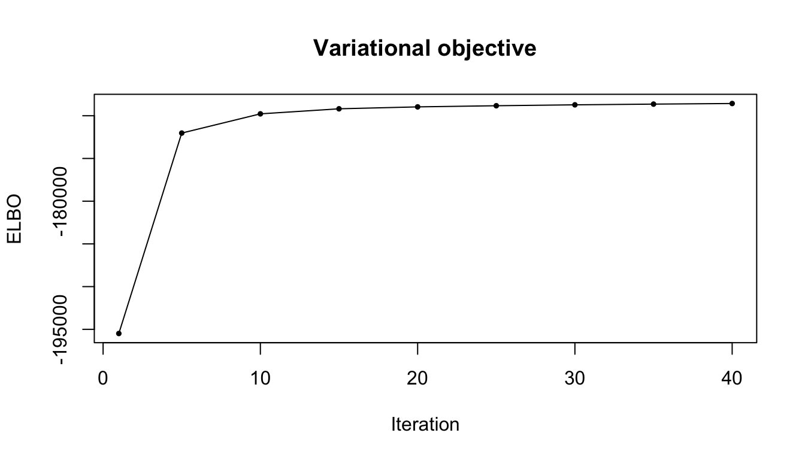
data.frame(
converged = fit$converged,
n_iter = fit$n_iter,
final_elbo = tail(fit$elbo[fit$elbo_iter], 1)
) converged n_iter final_elbo
1 TRUE 40 -168567.6factor_match = match_true_to_learned(fit$F, F0)
factor_match$match true_factor learned_factor cosine
1 1 4 0.9705946
2 2 5 0.9647660
3 3 1 0.9780176
4 4 7 0.9780678
5 5 6 0.9781375cosine_fit_true = row_cosine(fit$F, F0)
plot_cosine_heatmap(
cosine_fit_true,
"Cosine similarity between fitted and true factors"
)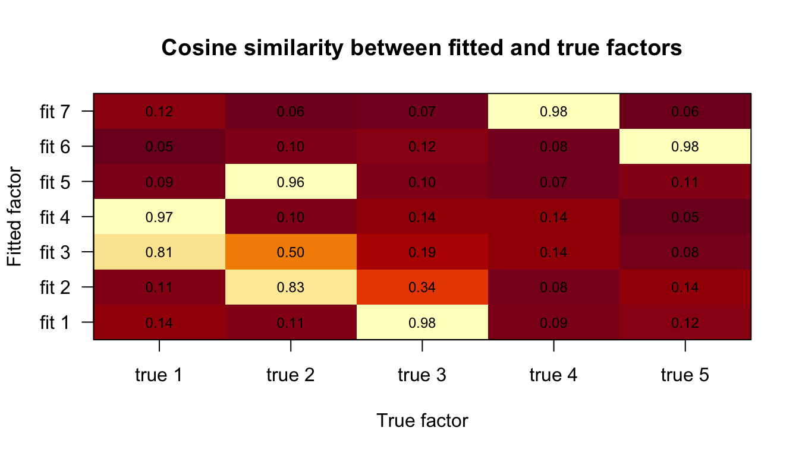
fit_loading_scores = loading_scores(fit)
fit_assignment_scores = assignment_scores(fit)
loading_usage = colSums(fit_loading_scores) / sum(fit_loading_scores)
assignment_usage = colSums(fit_assignment_scores) / sum(fit_assignment_scores)
learned_row_summary = transform(
factor_match$learned_rows,
loading_usage = loading_usage,
assignment_usage = assignment_usage
)
learned_row_summary[order(learned_row_summary$loading_usage, decreasing = TRUE), ] learned_factor matched_true_factor nearest_true_factor nearest_true_cosine
1 1 3 3 0.9780176
5 5 2 2 0.9647660
4 4 1 1 0.9705946
6 6 5 5 0.9781375
7 7 4 4 0.9780678
3 3 NA 1 0.8140813
2 2 NA 2 0.8327874
loading_usage assignment_usage
1 0.1901225 0.1770744
5 0.1804073 0.1683337
4 0.1554943 0.1535049
6 0.1318004 0.1404392
7 0.1266470 0.1404088
3 0.1149004 0.1060397
2 0.1006282 0.1141992data.frame(
mean_true_match_cosine = mean(factor_match$match$cosine),
min_true_match_cosine = min(factor_match$match$cosine),
total_unmatched_loading_usage =
sum(loading_usage[is.na(factor_match$learned_to_true)]),
max_unmatched_loading_usage =
max(loading_usage[is.na(factor_match$learned_to_true)])
) mean_true_match_cosine min_true_match_cosine total_unmatched_loading_usage
1 0.9739167 0.964766 0.2155285
max_unmatched_loading_usage
1 0.1149004plot_usage(
loading_usage = loading_usage,
assignment_usage = assignment_usage,
nearest_true = factor_match$nearest_true
)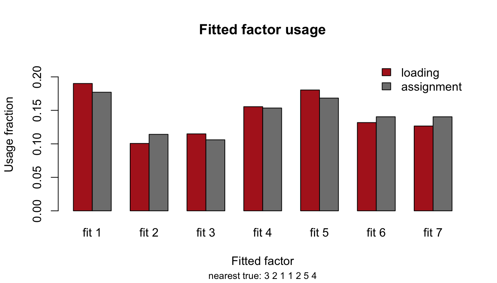
ord = order(loading_usage, decreasing = TRUE)
matplot(t(fit$F[ord, 1:150]), type = "l", lty = 1,
xlab = "m", ylab = "F[k, m]",
main = "Learned factor rows ordered by usage")
legend("topright", legend = paste0("learned ", ord), col = seq_along(ord),
lty = 1, bty = "n")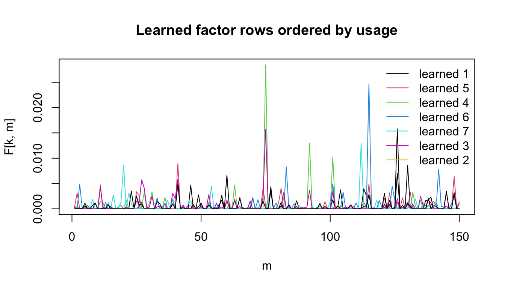
Support recovery is evaluated after mapping learned factor rows to their nearest true factor. This gives a generous view of sparsity recovery even if the overspecified model splits one true factor across multiple learned rows.
scores_nearest_true = map_scores_to_true(
fit_loading_scores,
factor_match$nearest_true,
K_true
)
support_recovery = data.frame(
exact_support_accuracy = mean(
support_labels_from_scores(scores_nearest_true, true_support_size) ==
true_support_label
),
mean_normalized_loading_entropy = normalized_entropy(scores_nearest_true)
)
support_recovery exact_support_accuracy mean_normalized_loading_entropy
1 0.974375 0.2598542The first plot below keeps all fitted factor rows, so extra factors appear explicitly if the overspecified fit uses them in the strongest posterior loading scores. The second plot collapses fitted rows to the nearest true factor. Thus, the all-fitted plot diagnoses factor splitting, whereas the collapsed plot asks whether the correct true support is still recovered after accounting for that splitting.
plot_recovered_support_fit(
fit_loading_scores,
"Recovered supports over all fitted factors"
)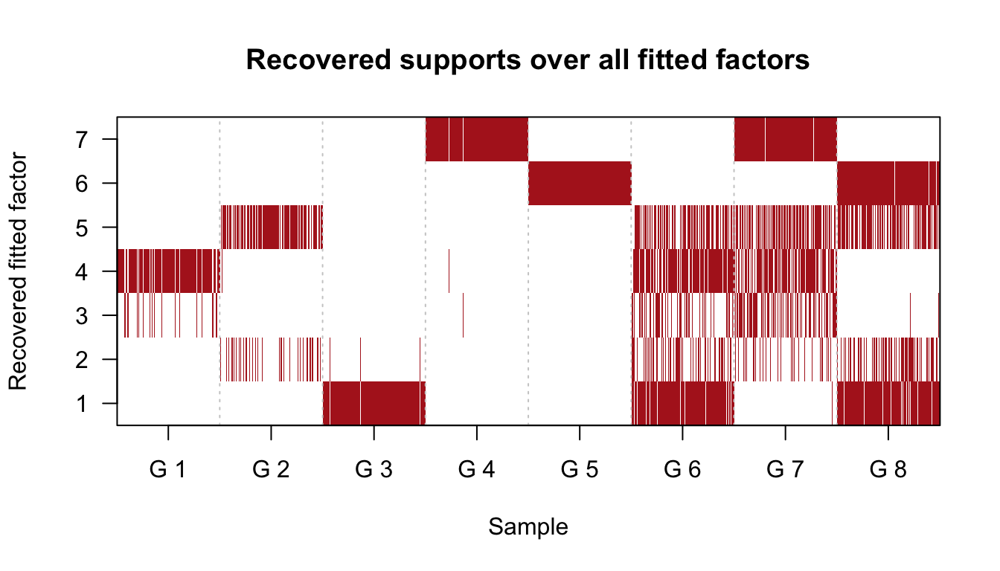
plot_recovered_support(
scores_nearest_true,
"Recovered supports with overspecified K"
)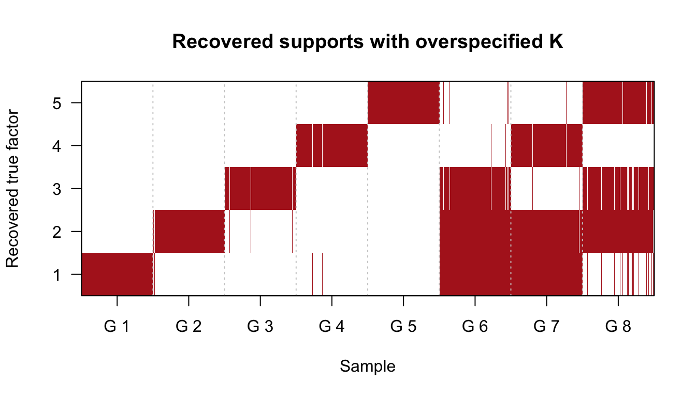
The cosine heatmap and all-fitted support plot show that the extra factors are not simply unused. Some fitted rows compete to represent the same true factor. The collapsed support plot can still look accurate because those competing rows are mapped back to the same true factor.
SuSiE-style posterior uncertainty about factor identity is represented most directly by gamma_bar, or by posterior inclusion probabilities derived from gamma_bar. The auxiliary variables xi allocate observed counts across effects and features; they are useful for fitting, but they are not the most direct summary of uncertainty among highly correlated fitted factor rows.
Here we identify true factors whose nearest fitted rows are duplicated. For the duplicated true factor with the largest fitted loading usage, we inspect how the posterior mass is split among its competing fitted rows.
pip_scores = posterior_inclusion_scores(fit)
competing_sets = split(seq_len(K_fit), factor_match$nearest_true)
competing_sets = competing_sets[vapply(competing_sets, length, integer(1)) > 1]
competing_summary = do.call(rbind, lapply(names(competing_sets), function(k0) {
factor_set = competing_sets[[k0]]
data.frame(
true_factor = as.integer(k0),
fitted_factors = paste(factor_set, collapse = ","),
n_fitted_factors = length(factor_set),
mean_nearest_cosine =
mean(cosine_fit_true[factor_set, as.integer(k0)]),
total_loading_usage = sum(loading_usage[factor_set]),
total_assignment_usage = sum(assignment_usage[factor_set]),
row.names = NULL
)
}))
competing_summary[order(competing_summary$total_loading_usage,
decreasing = TRUE), ] true_factor fitted_factors n_fitted_factors mean_nearest_cosine
2 2 2,5 2 0.8987767
1 1 3,4 2 0.8923379
total_loading_usage total_assignment_usage
2 0.2810355 0.2825329
1 0.2703946 0.2595446selected_true_factor = competing_summary$true_factor[
which.max(competing_summary$total_loading_usage)
]
selected_fitted_factors = competing_sets[[as.character(selected_true_factor)]]
selected_diag = competing_factor_diagnostics(
selected_true_factor,
factor_set = selected_fitted_factors
)
selected_diag$summary true_factor candidate_fitted_factors n_samples_with_true_factor
1 2 2,5 800
mean_candidate_cosine max_candidate_cosine total_candidate_loading_usage
1 0.8987767 0.964766 0.2810355
mean_pip_entropy median_pip_entropy mean_top_pip_share mean_loading_entropy
1 0.2783911 4.987178e-08 0.8591629 0.1780858
median_loading_entropy mean_top_loading_share
1 1.514546e-06 0.9296235plot_competing_factor_shares(
selected_diag$pip_share,
selected_diag$sample_idx,
selected_diag$factor_set,
paste("Conditional PIP share among competitors for true factor",
selected_true_factor)
)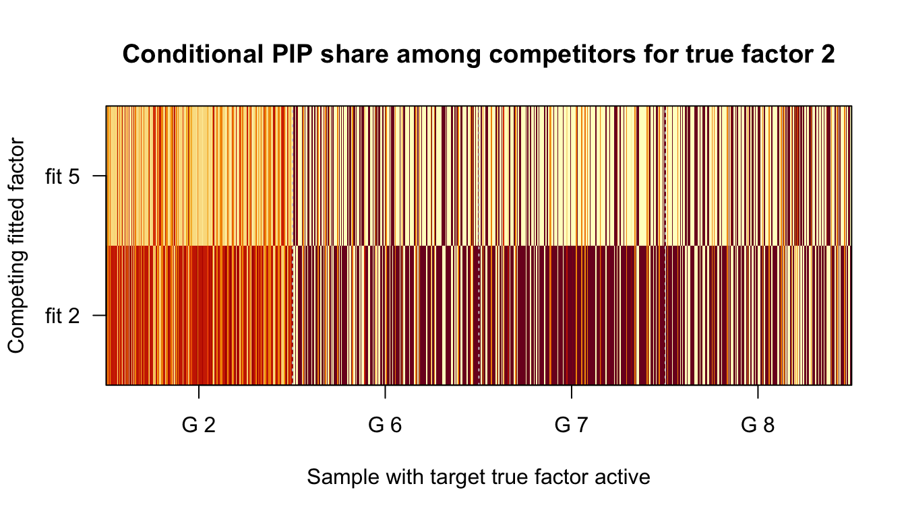
plot_competing_factor_shares(
selected_diag$loading_share,
selected_diag$sample_idx,
selected_diag$factor_set,
paste("Conditional loading share among competitors for true factor",
selected_true_factor)
)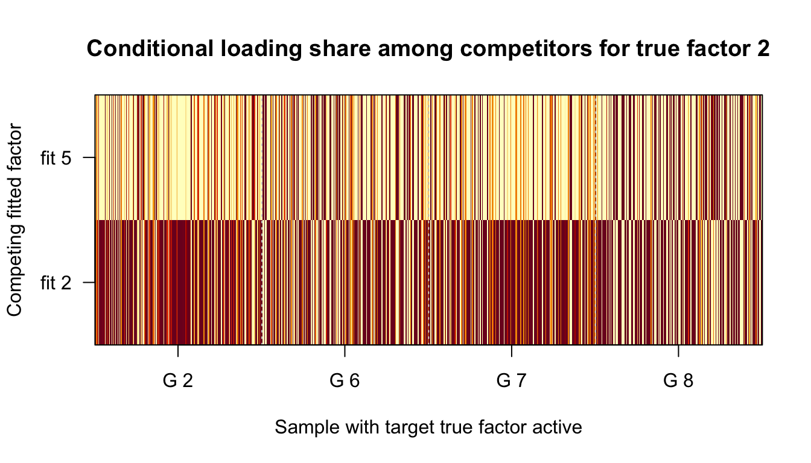
plot_competing_entropy(
selected_diag$pip_entropy,
selected_diag$sample_idx,
paste("PIP uncertainty among competitors for true factor",
selected_true_factor)
)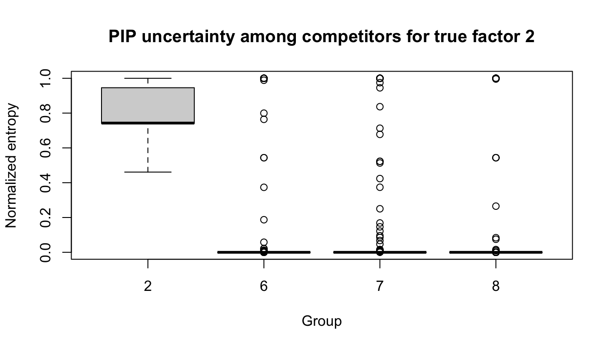
High conditional entropy means that the posterior does not strongly distinguish between the competing fitted rows. Low entropy means one fitted row dominates. The PIP-share heatmap is the closest diagnostic to SuSiE’s usual uncertainty quantification; the loading-share heatmap additionally asks whether that uncertainty matters for reconstructed loading mass.
The duplicated-nearest-factor rule is strict. We also inspect true factors 3 and 4 by taking the fitted rows whose factor shapes are most cosine-similar to each target true factor. This asks whether the weaker visually apparent competition corresponds to genuine posterior uncertainty or only to small shape similarity.
factor3_diag = competing_factor_diagnostics(3, top_n = 3)
factor3_diag$summary true_factor candidate_fitted_factors n_samples_with_true_factor
1 3 1,2,3 600
mean_candidate_cosine max_candidate_cosine total_candidate_loading_usage
1 0.501065 0.9780176 0.405651
mean_pip_entropy median_pip_entropy mean_top_pip_share mean_loading_entropy
1 0.4750635 0.6309298 0.7228117 0.2034281
median_loading_entropy mean_top_loading_share
1 0.004004373 0.8800951old_par = par(mfrow = c(3, 1), mar = c(4.5, 4.5, 3, 1))
plot_competing_diagnostics(factor3_diag, "true factor 3")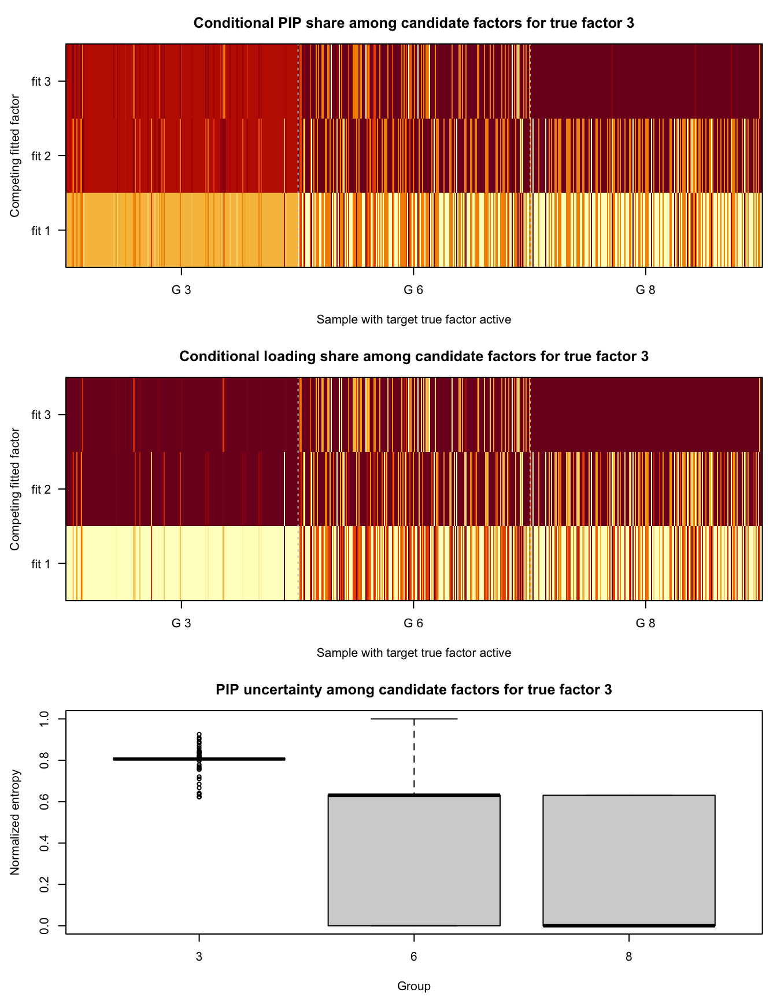
par(old_par)factor4_diag = competing_factor_diagnostics(4, top_n = 3)
factor4_diag$summary true_factor candidate_fitted_factors n_samples_with_true_factor
1 4 3,4,7 400
mean_candidate_cosine max_candidate_cosine total_candidate_loading_usage
1 0.4171044 0.9780678 0.3970417
mean_pip_entropy median_pip_entropy mean_top_pip_share mean_loading_entropy
1 0.7394124 0.806149 0.5700989 0.3306178
median_loading_entropy mean_top_loading_share
1 0.4079723 0.7999409old_par = par(mfrow = c(3, 1), mar = c(4.5, 4.5, 3, 1))
plot_competing_diagnostics(factor4_diag, "true factor 4")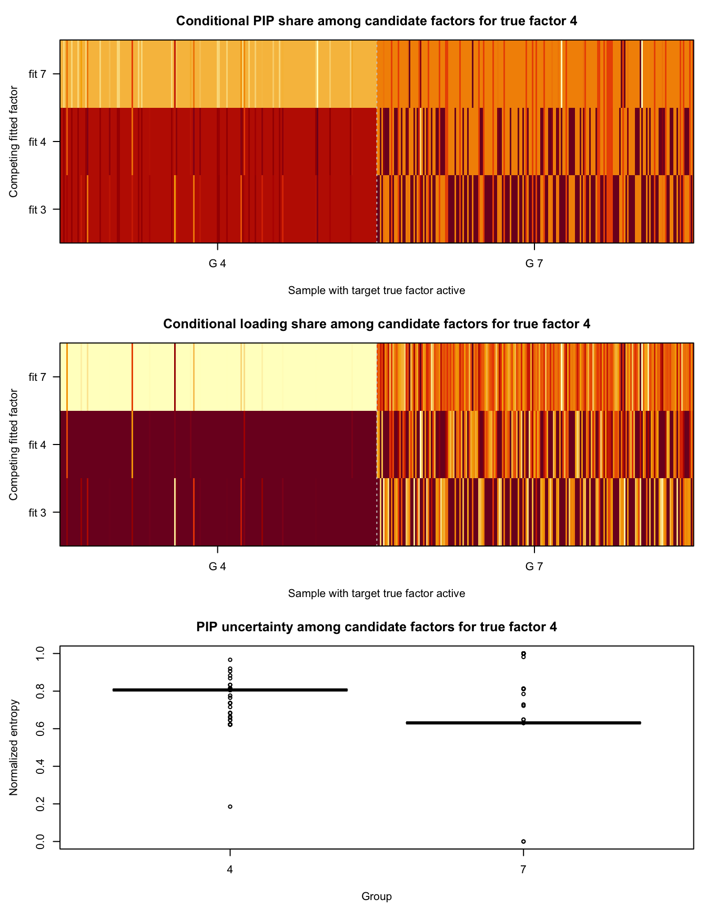
par(old_par)For these candidate sets, compare PIP entropy with loading entropy. If PIP entropy is elevated but loading entropy is low, the model is uncertain about which duplicate row receives the label, but the reconstructed loading mass is still concentrated. If both are elevated, the overfitted rows are materially splitting the signal.
gamma_bar As Loading UncertaintyThe posterior assignment probabilities gamma_bar[i, d, k] are the right object for quantifying posterior uncertainty in the loadings conditional on the fitted factor matrix F. Given F, each observation has a loading representation \[
L_{ik} \approx \sum_{d=1}^D \beta_{id} 1\{\gamma_{id}=k\}.
\] Thus gamma_bar[i, d, k] measures how much posterior probability effect d in observation i assigns to fitted factor k. When fitted factors are highly similar because K is overspecified, diffuse posterior mass across those similar fitted rows means the loading support is uncertain between them.
In this file we summarize that uncertainty in two ways. First, the fitted-factor PIP \[
\mathrm{PIP}_{ik} = 1 - \prod_{d=1}^D (1 - \bar\gamma_{idk})
\] is the posterior probability that at least one effect in observation i uses fitted factor k. Conditional PIP shares among a set of competing fitted factors show which duplicate row receives the support probability. Entropy of those shares is high when the posterior cannot confidently choose among the competing rows.
Second, the posterior expected loading score \[ S_{ik} = \sum_{d=1}^D \bar\gamma_{idk} E_q[\beta_{id} \mid \gamma_{id}=k] \] weights assignment uncertainty by expected effect size. This distinguishes pure label ambiguity from uncertainty that materially affects the reconstructed loading mass. High PIP entropy but low loading-share entropy means the posterior is uncertain about labels but the loading mass is mostly concentrated. High entropy in both summaries means the overfitted factors are genuinely splitting the loading signal.
Overfitting \(K\) is not best diagnosed by global entropy of gamma_bar. Instead, the useful diagnostic is targeted uncertainty among fitted rows that are close to the same true factor. If several fitted rows have high cosine similarity to one true row, we should inspect conditional PIP shares and loading shares within that competing set. This separates harmless label ambiguity from a real split of the reconstructed loading mass.
sessionInfo()R version 4.3.2 (2023-10-31)
Platform: aarch64-apple-darwin20 (64-bit)
Running under: macOS 26.5.1
Matrix products: default
BLAS: /System/Library/Frameworks/Accelerate.framework/Versions/A/Frameworks/vecLib.framework/Versions/A/libBLAS.dylib
LAPACK: /Library/Frameworks/R.framework/Versions/4.3-arm64/Resources/lib/libRlapack.dylib; LAPACK version 3.11.0
locale:
[1] C.UTF-8/C.UTF-8/C.UTF-8/C/C.UTF-8/C.UTF-8
time zone: America/New_York
tzcode source: internal
attached base packages:
[1] stats graphics grDevices utils datasets methods base
other attached packages:
[1] workflowr_1.7.1
loaded via a namespace (and not attached):
[1] vctrs_0.6.5 httr_1.4.7 cli_3.6.5 knitr_1.50
[5] rlang_1.1.6 xfun_0.52 stringi_1.8.7 otel_0.2.0
[9] processx_3.8.6 promises_1.5.0 jsonlite_2.0.0 glue_1.8.0
[13] rprojroot_2.1.1 git2r_0.36.2 htmltools_0.5.8.1 httpuv_1.6.16
[17] ps_1.9.1 sass_0.4.10 rmarkdown_2.29 jquerylib_0.1.4
[21] tibble_3.3.0 evaluate_1.0.5 fastmap_1.2.0 yaml_2.3.10
[25] lifecycle_1.0.4 whisker_0.4.1 stringr_1.6.0 compiler_4.3.2
[29] fs_1.6.6 pkgconfig_2.0.3 Rcpp_1.1.0 rstudioapi_0.17.1
[33] later_1.4.2 digest_0.6.39 R6_2.6.1 pillar_1.11.1
[37] callr_3.7.6 magrittr_2.0.3 bslib_0.9.0 tools_4.3.2
[41] cachem_1.1.0 getPass_0.2-4